Project 2 — Fun with Filters and Frequencies!
Part 1.1: Convolutions from Scratch!
I implemented convolution using four nested loops and then optimized it to use two loops with NumPy's elementwise operations. Both implementations flip the kernel and apply zero padding to preserve the input dimensions.
I implemented 2D convolution directly using its definition:
\[ (I * K)(x,y) = \sum_{i=0}^{k_h-1} \sum_{j=0}^{k_w-1} K(i,j)I(x-i,y-j) \]I tested both implementations on my grayscale selfie using a 9 x 9 box filter and finite-difference operators. The box filter smooths the image, while the derivative filters emphasize intensity changes in different directions.
For the box-filter experiment, I used a normalized \(9 \times 9\) kernel:
\[ K = \frac{1}{81}\mathbf{1}_{9\times9} \]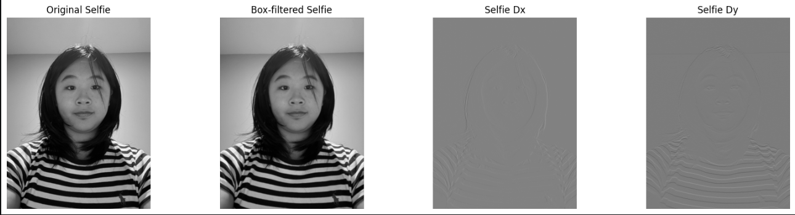
I compared both implementations with SciPy's convolve2d to verify correctness and evaluate their performance.
| Implementation | Runtime |
|---|---|
| Four loops | 112.43 seconds |
| Two loops | 10.86 seconds |
| SciPy | 0.47 seconds |
From the runtime results, we can see that the four-loop convolution is very significantly the slowest implementation. This is followed by the two-loop convolution, and the SciPy implementation is the fastest.
The four-loop version performs every multiplication and addition inside Python loops. The two-loop version reduces this overhead by performing operations on entire image patches using NumPy, while SciPy uses an optimized compiled implementation.
I verified my two-loop implementation against scipy.signal.convolve2d. The maximum absolute difference was approximately \(1.67 \times 10^{-15}\), and np.allclose returned True. Both implementations use zero padding, equivalent to SciPy's boundary="fill", fillvalue=0. This differs from symmetric padding, which reflects image values at the boundaries.
Below are the implementation details:
def conv_four_loops(img, kernel):
H, W = img.shape
Kh, Kw = kernel.shape
kernel = np.flip(kernel, axis=(0, 1))
pad_h = Kh // 2
pad_w = Kw // 2
padded = np.pad(
img, ((pad_h, pad_h), (pad_w, pad_w)),
mode='constant'
)
output = np.zeros_like(img, dtype=np.float64)
for i in range(H):
for j in range(W):
for m in range(Kh):
for n in range(Kw):
output[i, j] += (
padded[i + m, j + n] * kernel[m, n]
)
return output
def conv_two_loops(img, kernel):
H, W = img.shape
Kh, Kw = kernel.shape
kernel = np.flip(kernel, axis=(0, 1))
pad_h = Kh // 2
pad_w = Kw // 2
padded = np.pad(
img, ((pad_h, pad_h), (pad_w, pad_w)),
mode='constant'
)
output = np.zeros_like(img, dtype=np.float64)
for i in range(H):
for j in range(W):
region = padded[i:i+Kh, j:j+Kw]
output[i, j] = np.sum(region * kernel)
return output
Part 1.2: Finite Difference Operator
I applied the horizontal and vertical finite-difference operators to the cameraman image and combined their responses using the gradient magnitude. This detects intensity changes regardless of edge orientation.
\[ D_x = \begin{bmatrix} 1 & 0 & -1 \end{bmatrix}, \qquad D_y = \begin{bmatrix} 1\\ 0\\ -1 \end{bmatrix} \]I convolved the image with each operator and combined the resulting derivatives using the gradient magnitude:
\[ G(x,y) = \sqrt{ (I * D_x)^2(x,y) + (I * D_y)^2(x,y) } \]To obtain a binary edge map, I thresholded the gradient magnitude:
\[ E(x,y) = \begin{cases} 1 & G(x,y) > T\\ 0 & \text{otherwise} \end{cases} \]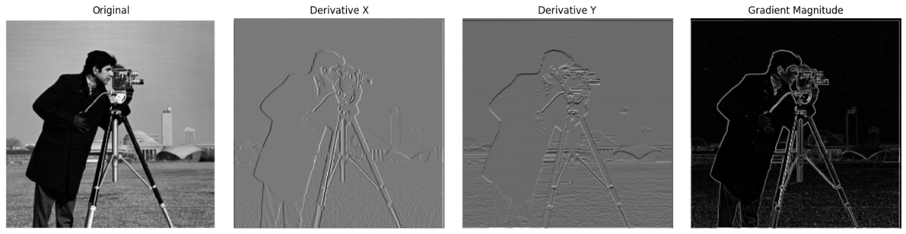
I experimented with different thresholds to produce a binary edge image. Lower thresholds preserved more weak edges but also introduced additional noise. Increasing the threshold removed noise at the expense of some weaker boundaries.
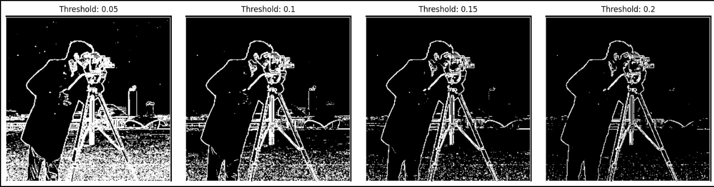
I compared thresholds of 0.05, 0.10, 0.15, and 0.20. At lower thresholds, the edge map includes weaker intensity variations, including texture in the background. I selected 0.15 to prioritize the more prominent boundaries, such as the cameraman's silhouette and the outlines of the surrounding structures, rather than preserving every small intensity change.
Part 1.3: Derivative of Gaussian Filter
The original finite-difference results contained noise because derivatives respond to small intensity changes. To reduce this, I smoothed the cameraman image with a Gaussian filter before calculating its derivatives.
\[ G_\sigma(x,y) = \frac{1}{2\pi\sigma^2} \exp\left( -\frac{x^2+y^2}{2\sigma^2} \right) \]I first convolved the cameraman image with the Gaussian and then applied the finite-difference operators:
\[ I_x = (I * G_\sigma) * D_x \] \[ I_y = (I * G_\sigma) * D_y \]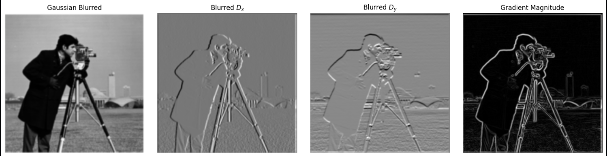
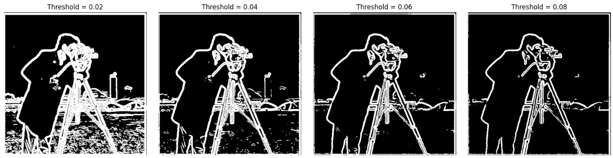
I also constructed derivative-of-Gaussian filters by convolving the Gaussian kernel with the finite-difference operators. This combines smoothing and differentiation into a single convolution.
\[ DoG_x = G_\sigma * D_x, \qquad DoG_y = G_\sigma * D_y \]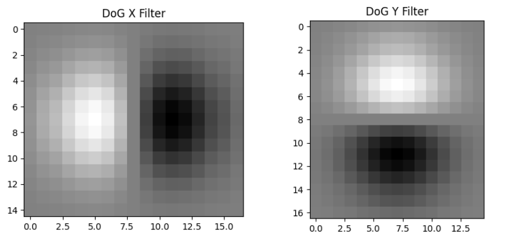
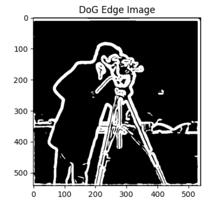
By the associativity of convolution, applying these combined filters should produce approximately the same results as smoothing and differentiating separately, provided the boundary handling is consistent.
I compared the derivative-of-Gaussian results against smoothing followed by differentiation. The maximum absolute difference in the interior was 1.12e-15 for Dx and 1.17e-15 for Dy. The two approaches produce nearly identical results away from the image boundaries, consistent with the associativity of convolution.
Part 2.1: Image "Sharpening"
I implemented unsharp masking by subtracting a Gaussian-blurred image from the original to isolate high-frequency details. Adding a scaled version of these details back to the original increases local contrast around edges.
\[ I_{\text{sharp}} = \left[(1+\alpha)\delta -\alpha G_\sigma\right]*I \]Here, \(\delta\) is the identity filter and \(\alpha\) controls the sharpening strength.
I used a 9 x 9 Gaussian kernel with \(\sigma = 2\) and compared sharpening strengths of \(\alpha = 0, 0.5, 1, 2, 4\). At \(\alpha = 0\), the image remains unchanged. Increasing \(\alpha\) emphasizes architectural edges and fine details, but also increases the risk of exaggerated contrast around high-contrast boundaries.
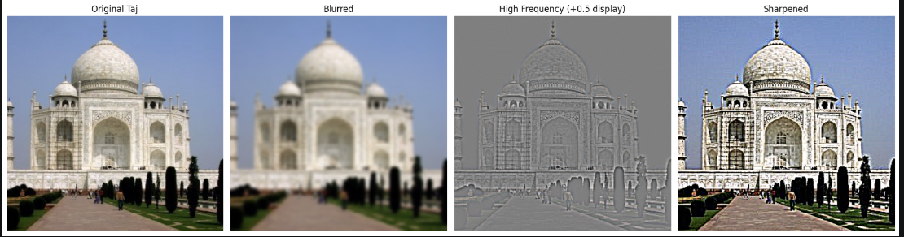
I experimented with different sharpening strengths. Increasing the strength made architectural details more pronounced, although excessive sharpening can exaggerate noise and create halos.
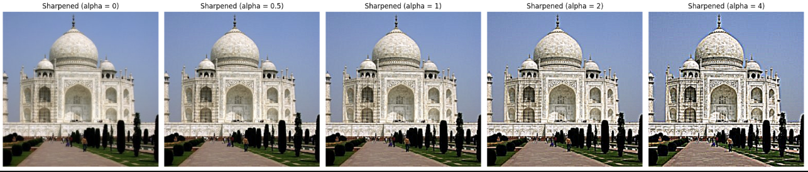
I repeated the experiment with a photo of the Lotus Temple and tested whether sharpening could recover an artificially blurred image.
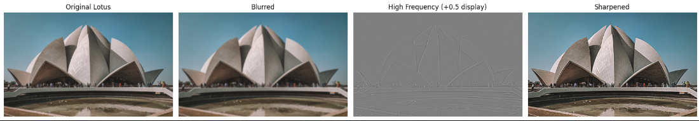
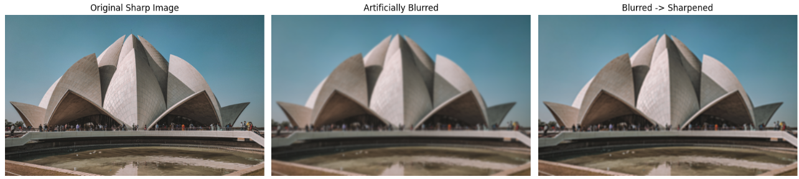
Although sharpening increased the apparent definition of the blurred image, it could not fully restore the original details, such as the people at the entrance of the temple. Blurring suppresses high-frequency information, and unsharp masking can only amplify the information that remains. It cannot reconstruct details that were effectively removed.
Part 2.2: Hybrid Images
Hybrid images combine the low frequencies of one photograph with the high frequencies of another. The high-frequency subject is more apparent up close, while the low-frequency subject becomes dominant at greater viewing distances.
\[ I_{\text{hybrid}} = G_{\sigma_L}*I_A + \left(I_B-G_{\sigma_H}*I_B\right) \]The Gaussian filter with standard deviation \(\sigma_L\) extracts the low frequencies of the first image. Subtracting a Gaussian-blurred version of the second image isolates its high frequencies.
I aligned Derek and Nutmeg using corresponding facial features, then combined low-frequency Derek with high-frequency Nutmeg. Alignment was important because mismatched features made the two subjects compete rather than form a convincing hybrid.
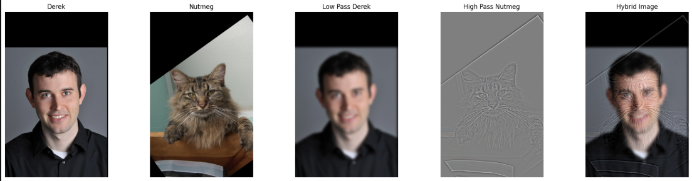
For Derek and Nutmeg, I used a Gaussian kernel size of 41, with \(\sigma_L = 8\) for Derek and \(\sigma_H = 5\) for Nutmeg. I also tested the parameter pairs (2, 2), (4, 2), (5, 3), (7, 4), and (10, 5) to examine how the relative strength of the two frequency components affects the hybrid.
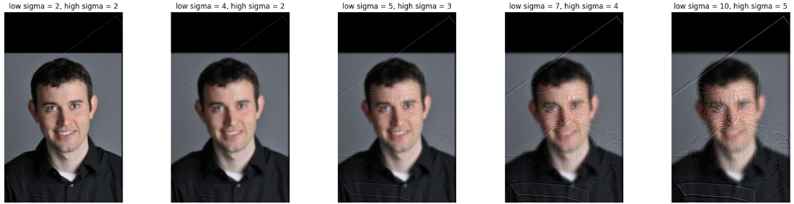
I also examined the log-magnitude Fourier transforms of both aligned input images, the low-pass Derek image, the high-pass Nutmeg image, and the final hybrid. Low-pass filtering concentrates the retained frequency information near the center of the spectrum, while high-pass filtering suppresses much of that central region. The final hybrid contains contributions from both frequency bands.
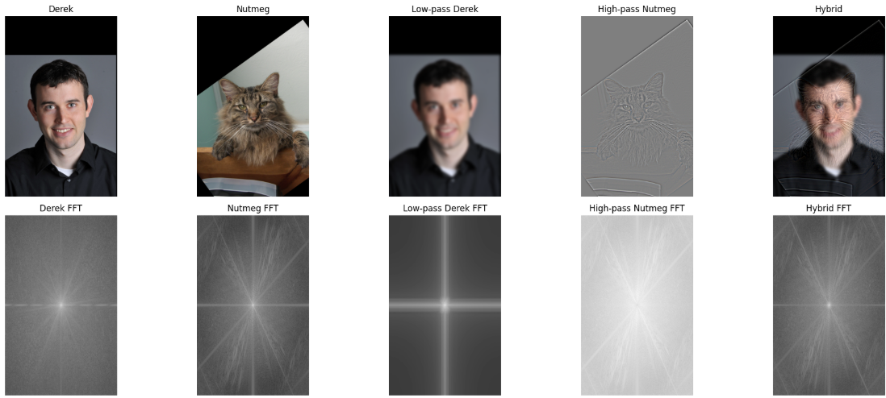
For my second hybrid, I paired a mushroom cloud with a jellyfish because their rounded silhouettes have similar overall shapes. I combined the low-frequency mushroom cloud with the high-frequency jellyfish.
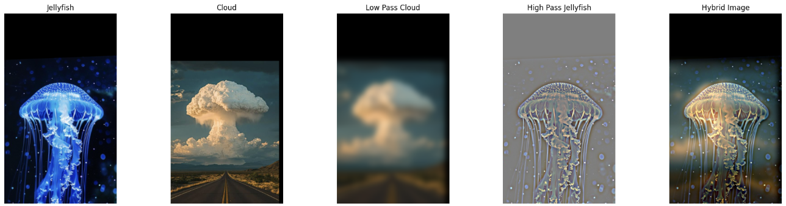
For my third hybrid, I paired a koala with an owl because their round heads are similar to each other, and I was able to align the eyes. I combined the low-frequency koala with the high-frequency owl.
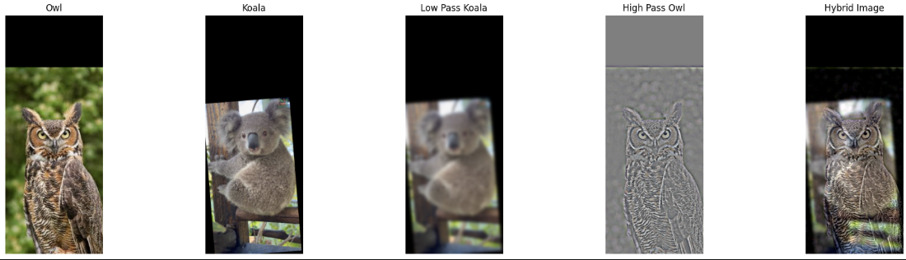
Part 2.3: Gaussian and Laplacian Stacks
I implemented Gaussian and Laplacian stacks to decompose images across multiple spatial scales. Each Gaussian level is progressively smoother, while each Laplacian level captures the details removed between successive Gaussian levels. Unlike pyramids, these stacks preserve the original image dimensions.
I constructed Gaussian stacks by repeatedly smoothing the previous level:
\[ G_0 = I, \qquad G_{i+1} = G_\sigma * G_i \]I then constructed the Laplacian stack by subtracting adjacent Gaussian levels:
\[ L_i = G_i - G_{i+1} \]The final Laplacian level retains the lowest-frequency Gaussian image. Because the differences telescope, the original image can be reconstructed by summing the Laplacian levels:
\[ I = \sum_{i=0}^{N}L_i \]Unlike image pyramids, my stacks preserve the original image dimensions at every level. This allows corresponding pixels from different frequency bands to be blended directly.
I constructed the apple and orange stacks using five filtering iterations with \(\sigma = 4\), producing six levels per stack. To make the Laplacian details easier to see, I multiplied the non-residual Laplacian levels by three and added 0.5 for display. These adjustments were only used for visualization, not reconstruction.
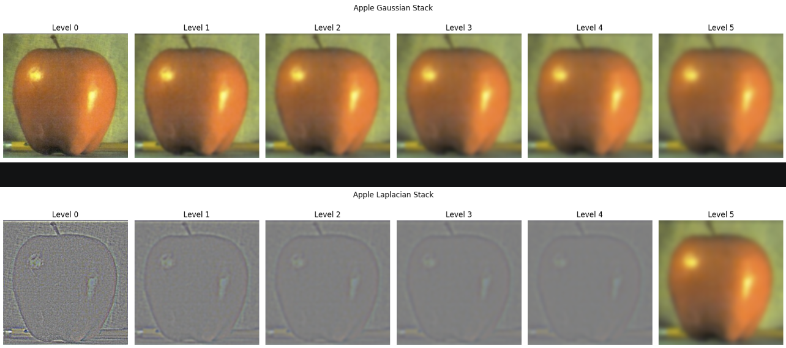
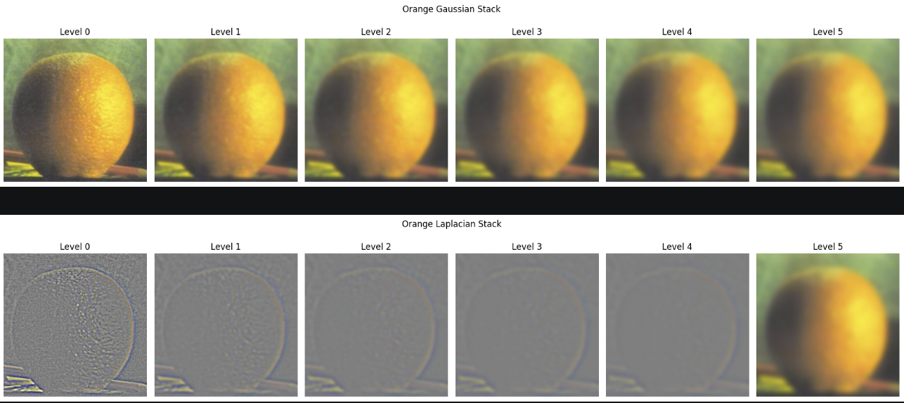
Part 2.4: Multiresolution Blending (The Oraple!)
I implemented multiresolution blending using Laplacian stacks for the input photographs and a Gaussian stack for the mask. At each level, the blurred mask determines the contribution from each image. Summing the blended levels produces the final result.
At each level, I combined the corresponding Laplacian images using the blurred mask:
I first recreated the classic apple-orange blend using a vertical mask. Blending different frequency bands with progressively smoother masks helps soften the transition between the two photographs.
\[ L_{\text{blend}}^i = G_M^i \odot L_A^i + (1-G_M^i)\odot L_B^i \]Here, \(G_M^i\) is the Gaussian-smoothed mask at level \(i\), and \(\odot\) denotes elementwise multiplication.
I reconstructed the final blended image by summing the blended Laplacian levels:
\[ I_{\text{blend}} = \sum_{i=0}^{N}L_{\text{blend}}^i \]Because the mask becomes smoother at coarser levels, low-frequency features transition more gradually while high-frequency details can transition over a narrower region.
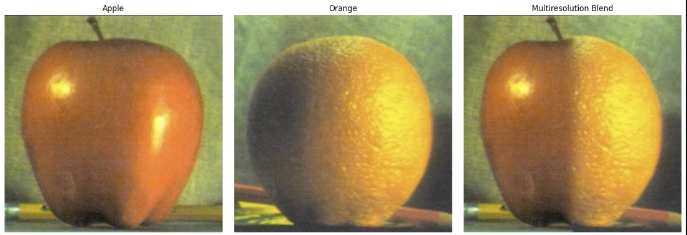
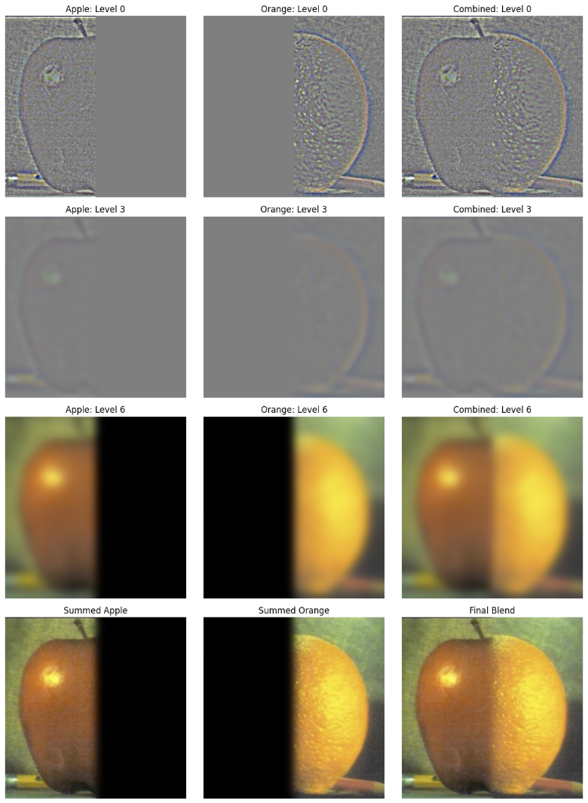
I blended a fruit tree with a cherry blossom tree using a vertical mask. Unlike the Oraple, these photographs contain irregular natural textures, including branches, foliage, and blossoms. Multiresolution blending softens the transition between the two photographs, although differences in color and scene structure can still make the boundary noticeable.
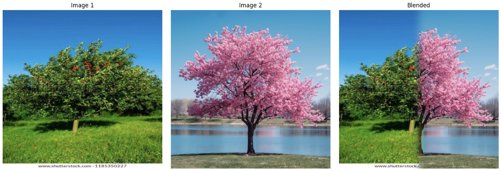
For my irregular-mask experiment, I replaced the view through a doorway with another landscape. I created a mask following the doorway's opening so the surrounding architecture would remain intact while the interior was blended with the replacement scene.
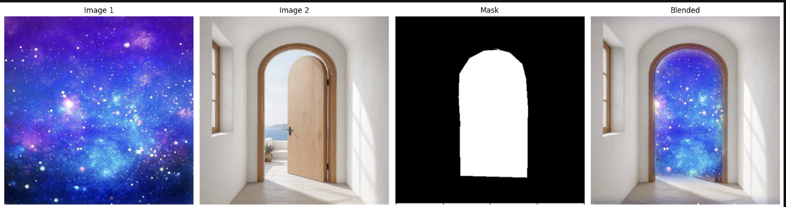
Challenges
The most challenging part of this project was choosing parameters that preserved the information I wanted without introducing unwanted visual effects. In edge detection, stronger smoothing reduced noise but also removed weaker details. For hybrid images, alignment and cutoff frequencies determined whether both subjects remained recognizable at different viewing distances.
My biggest takeaway was that different spatial frequencies contribute to an image in very different ways. High frequencies capture fine details and sharp boundaries, while low frequencies preserve broader shapes and structure. Multiresolution blending brought these ideas together by allowing images to transition differently at each scale, rather than relying on a single blending boundary.
Moreover, I realized that most of these techniques involved gaussian blurs, but the frequency played a huge role in determining the final result for different methods.